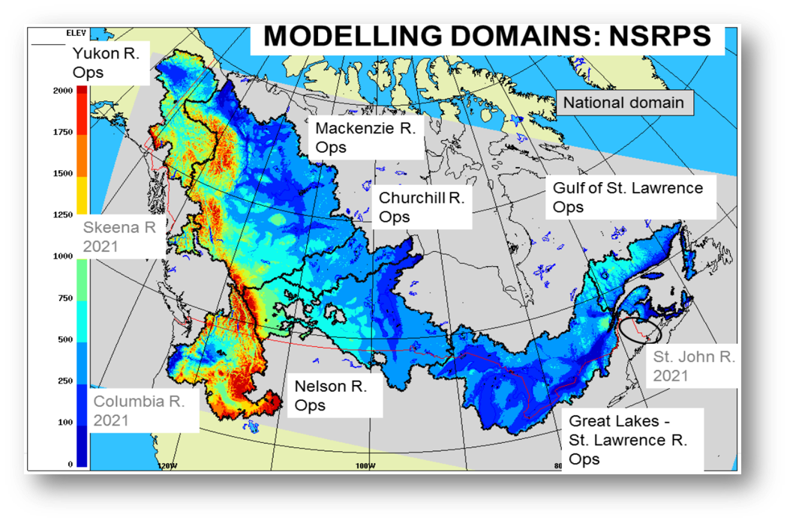

Deterministic Hydrologic Prediction System (DHPS)
Overview
DHPS is a river routing system that is part of Environment Canada's GEM-Hydro forecasting system, and is the river routing component of NSRPS. DHPS performs the routing of liquid water leaving the surface model (SPS), which is then conveyed in streams and lakes throughout the modelling domain. DHPS only routes water generated by the surface model, and generally does not add or remove water to or from the outputs of the surface model.
Current version: 3.1.0
Past versions:
Domain
Outputs from DHPS are currently implemented at a 1-km resolution over six major river basins representing ~50% of Canada. DHPS is currently established in the following basins:
- Yukon River Basin
- Mackenzie River Basin
- Nelson River Basin
- Churchill River Basin
- Great Lakes and St. Lawrence River Basin
DHPS also estimates the water budget of large specified water bodies, which include:

System Description
DHPS both analyses and forecasts, routing water from CaLDAS-Sat and HRDLPS, respectively, through a river basin’s lakes and
rivers at a 1-km grid resolution. It simulates lake levels for defined lakes or reservoirs and streamflow for all other points
throughout the domain. Twice a day, launching at 00 and 12 UTC, DHPS performs a 12-h data assimilation cycle followed by a 6-day forecast
DHPS is based on the Watroute routing scheme, and has the ability to represent reservoirs with a natural behavior as well as flow diversions.
DHPS also assimilates streamflow observations during the data assimilation cycle. Currently, DHPS assimilates
observations from ECCC’s Water Survey of Canada, USGS, and the provincial networks of river gauges in Quebec and Alberta.
Outputs
DHPS produces analyses in near real-time and forecasts over the next six days. From the analyses and forecasts, DHPS
provides hourly estimates of:
DHPS also provides analyses and forecasts of some variables averaged
over the surface of specified large lakes (listed above) during successive 12-hour periods:
Data Access
Currently DHPS data is only available through ECCC's internal Science Network.
License
The End-User Licence for Environment and Climate Change Canada's Data Servers specifies the conditions of use of this data.
Status
Current Status: Experimental
click here for descriptions of different operational statuses
Additional Information
Technical note
Specifications
Glossary
Change log